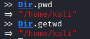
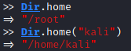
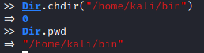
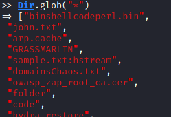

Dir
MethodsHere
https://www.geeksforgeeks.org/ruby-dir-class-and-its-methods/• current working directory.
• home directory
• change directory
• Listing
◇
Folders in a directory >> Dir.chdir('/destination_directory')
>> Dir.glob('*').select {|f| File.directory? f} ◇ Diretories and Files
